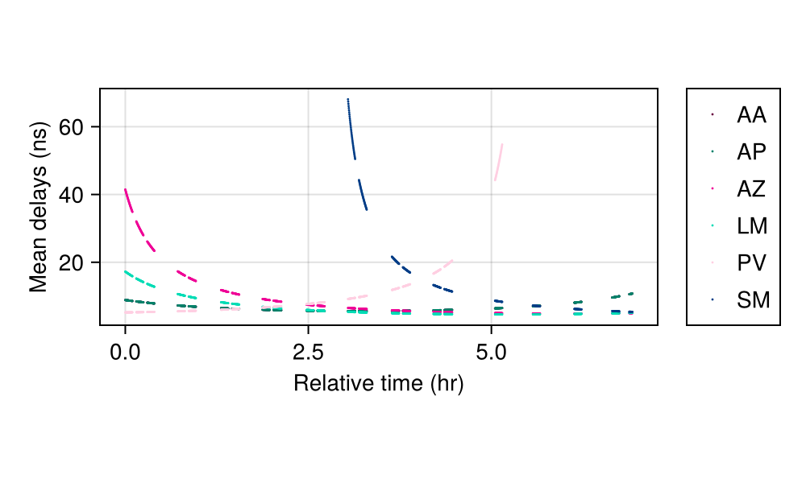
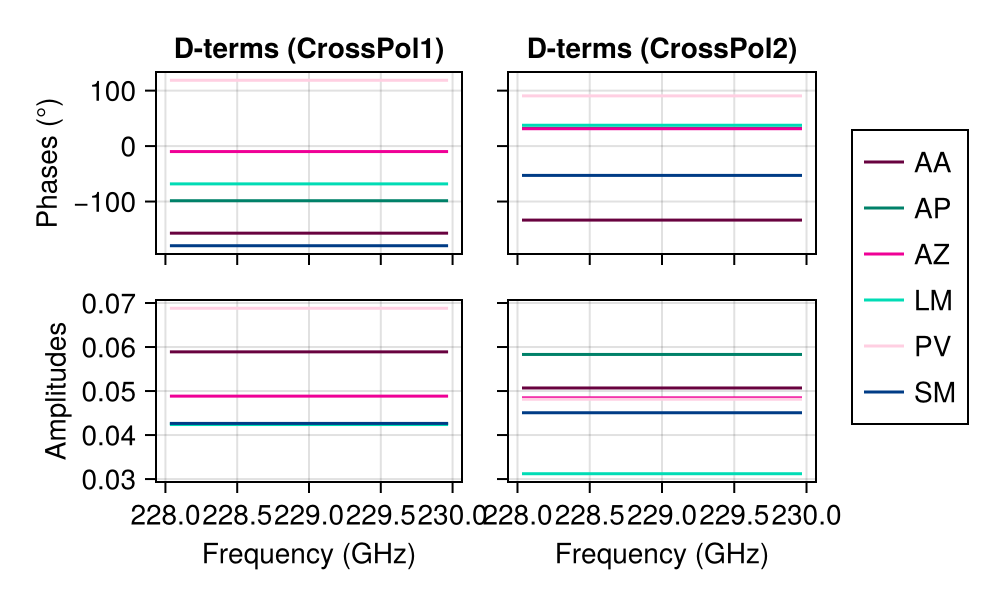
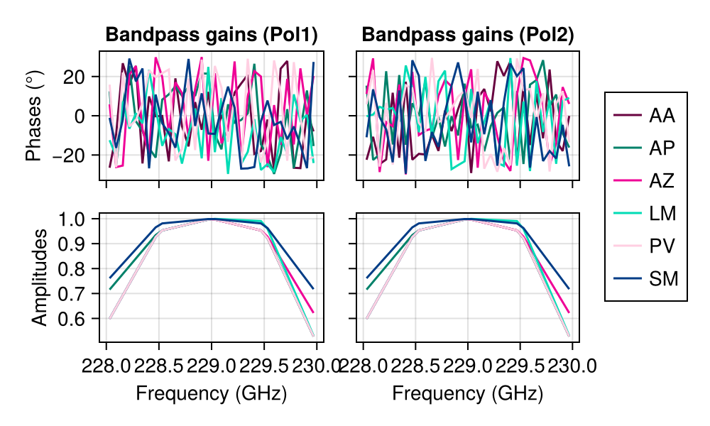

Compute instrument models
The primary goal of Anime is to generate instrument models tailored to specific observations. The models are optionally stored in HDF5 format. Basic plotting functions are also provided to visualize the models. The following example demonstrates how to compute and visualize the models.
All functions that follow require loading the following modules:
relativepath = "../../../"
include(joinpath(relativepath, "src", "Anime.jl"))
using .Anime
using HDF5
using CairoMakieWe also load two instances of observation from existing data sets to illustrate the various models that are generated – a single-channel data set and a multi-frequency data set.
msname = joinpath(relativepath, "test", "data", "ehtuvf.ms")
stations = joinpath(relativepath, "inputs", "eht_2017.stations")
corruptseed = 456
tropseed = 54364
tropwetonly =false
correff = 0.88
tropattenuate = true
tropskynoise = true
tropmeandelays = true
tropturbulence = true
polvisframe = "sky"
polmode = "gp"
ptginterval = 5.0
ptgscale = 2.0
ptgmode = "gp"
gainsmode = "gp"
bpfile = joinpath(relativepath, "test", "data", "eht_2017.bandpass")
delim = ","
ignorerepeated = false
obs1 = loadms(msname, stations, corruptseed, tropseed, tropwetonly, correff, tropattenuate, tropskynoise, tropmeandelays, tropturbulence, polvisframe,
polmode, ptginterval, ptgscale, ptgmode, gainsmode, bpfile, delim=",", ignorerepeated=false)Main.Anime.CjlObservation{Float64}("../../../test/data/ehtuvf.ms", ComplexF32[0.01032373f0 - 0.014814477f0im 7.030531f-5 - 0.00035163132f0im; -0.0006669172f0 - 0.00094977906f0im -0.00040459028f0 - 0.023570262f0im;;;; -0.010638107f0 + 0.01154323f0im 0.0013278084f0 - 0.0016259913f0im; -0.0010732552f0 + 0.00095050334f0im -0.005787506f0 + 0.020766787f0im;;;; 0.00619526f0 + 0.016035363f0im -0.0040570153f0 + 0.0010943835f0im; 0.0010865678f0 + 0.0014952145f0im 0.017174138f0 + 0.011295652f0im;;;; … ;;;; 0.0123501355f0 - 0.0045401827f0im -0.01573346f0 - 0.013164245f0im; 0.016802551f0 - 0.01028403f0im 0.025050364f0 + 0.0072622066f0im;;;; 0.0f0 + 0.0f0im 0.0f0 + 0.0f0im; 0.0f0 + 0.0f0im 0.0f0 + 0.0f0im;;;; 0.0f0 + 0.0f0im 0.0f0 + 0.0f0im; 0.0f0 + 0.0f0im 0.0f0 + 0.0f0im], Bool[0 0; 0 0;;;; 0 0; 0 0;;;; 0 0; 0 0;;;; … ;;;; 0 0; 0 0;;;; 0 0; 0 0;;;; 0 0; 0 0], Bool[0, 0, 0, 0, 0, 0, 0, 0, 0, 0 … 0, 0, 0, 0, 0, 0, 0, 0, 0, 0], Int32[0, 0, 0, 0, 0, 0, 0, 0, 0, 0 … 0, 2, 2, 3, 0, 0, 0, 2, 2, 3], Int32[4, 4, 4, 4, 4, 4, 4, 4, 4, 4 … 5, 3, 5, 5, 2, 3, 5, 3, 5, 5], [-5.803723114841101e6 -5.8044213952871645e6 … 4.44637002758342e6 5.847226054228269e6; -5.953771617972545e6 -5.954679450149762e6 … 1.2261709151665166e6 -146072.06891533697; 0.0 0.0 … 0.0 0.0], [4.998587525000059e9, 4.998587534999925e9, 4.998587544999951e9, 4.998587554999977e9, 4.998587565000004e9, 4.99858757500003e9, 4.998587585000056e9, 4.998587594999922e9, 4.998587604999948e9, 4.998587614999973e9 … 4.998612445000076e9, 4.998612445000076e9, 4.998612445000076e9, 4.998612445000076e9, 4.998612455001068e9, 4.998612455001068e9, 4.998612455001068e9, 4.998612455001068e9, 4.998612455001068e9, 4.998612455001068e9], 10.0, Int32[1, 1, 1, 1, 1, 1, 1, 1, 1, 1 … 13, 13, 13, 13, 13, 13, 13, 13, 13, 13], 1, [2.27070703125e11], 1.856e9, [-3.0070987899403234; 0.21626589854441303;;], [2.2250608136e6 2.2250395297e6 … 5.08896774544e6 -5.464555493e6; -5.44005959994e6 -5.4411976292e6 … -301681.18586 -2.492927989e6; -2.48168115054e6 -2.4793033597e6 … 3.82501220561e6 2.150797176e6], 6×25 DataFrame
Row │ station x_m y_m z_m dishdiameter_m sefd_Jy p ⋯
│ String3 Float64 Float64 Float64 Int64 Float64 F ⋯
─────┼──────────────────────────────────────────────────────────────────────────
1 │ AA 2.22506e6 -5.44006e6 -2.48168e6 73 60.0 ⋯
2 │ AP 2.22504e6 -5.4412e6 -2.4793e6 12 3300.0
3 │ AZ -1.8288e6 -5.05441e6 3.42787e6 10 7700.0
4 │ LM -7.68716e5 -5.98851e6 2.06335e6 32 2400.0
5 │ PV 5.08897e6 -3.01681e5 3.82501e6 30 1000.0 ⋯
6 │ SM -5.46456e6 -2.49293e6 2.1508e6 15 3300.0
19 columns omitted, false, 0.88, true, true, true, true, "sky", "gp", 5.0, 2.0, "gp", "gp", "../../../test/data/eht_2017.bandpass", Random.Xoshiro(0x67ee04b076833a4b, 0xf08ba7386ea77850, 0xbbb0dce8549bf925, 0xdeb6475526b824ae, 0xfb013e37788e81b6), Random.Xoshiro(0x1861b6afd6e3c538, 0x851b58994e9a0d10, 0xf40f2e2c1725de81, 0x8fa8adf8bbc504f6, 0x599c692558d267a7))Now load the multi-frequency data set
obs2 = loadms(joinpath(relativepath, "test", "data", "eht1.ms"), stations, corruptseed, tropseed, tropwetonly, correff, tropattenuate, tropskynoise, tropmeandelays, tropturbulence, polvisframe,
polmode, ptginterval, ptgscale, ptgmode, gainsmode, bpfile, delim=",", ignorerepeated=false)Main.Anime.CjlObservation{Float64}("../../../test/data/eht1.ms", ComplexF32[-1.0273637f0 + 0.7004192f0im 0.00022555549f0 + 0.000236881f0im; 0.00084277225f0 + 0.00015272002f0im -1.0286585f0 + 0.70050967f0im;;; -1.0268914f0 + 0.70096505f0im -0.00037109957f0 - 7.938013f-5im; -0.00015597435f0 + 0.00017940946f0im -1.0270165f0 + 0.70179135f0im;;; -1.0264783f0 + 0.7030251f0im -0.0008015804f0 - 0.00023954225f0im; 0.00075147906f0 + 0.00029436644f0im -1.0263323f0 + 0.7032508f0im;;; … ;;; -1.0026518f0 + 0.7298038f0im 0.00075719744f0 - 0.0002195926f0im; -0.00021225783f0 + 0.00026368516f0im -1.0022856f0 + 0.72896194f0im;;; -1.0029718f0 + 0.7298837f0im -0.00054098084f0 + 0.00037843187f0im; -0.00077896315f0 - 0.00047400512f0im -1.0028898f0 + 0.72879726f0im;;; -1.0017743f0 + 0.7316947f0im -0.0009820868f0 - 7.177364f-5im; -0.00017453257f0 - 0.00041243472f0im -1.0010175f0 + 0.7306092f0im;;;; -0.50845253f0 + 0.6172963f0im 0.004093032f0 + 0.0068043573f0im; 0.0030970995f0 - 0.0006632369f0im -0.51168233f0 + 0.6162545f0im;;; -0.28692132f0 + 0.74844706f0im 0.00041666414f0 - 0.0016706279f0im; -0.004037518f0 + 0.00039616274f0im -0.28683165f0 + 0.75162196f0im;;; -0.032331094f0 + 0.79899156f0im 0.0005483622f0 - 0.0018148221f0im; -0.0020069683f0 - 0.0008557663f0im -0.01992612f0 + 0.8008866f0im;;; … ;;; 0.45190036f0 - 0.6542451f0im -0.0032726706f0 - 0.00012370224f0im; -0.0018764437f0 + 0.002139818f0im 0.45640397f0 - 0.65307325f0im;;; 0.22021052f0 - 0.75910276f0im -0.001552463f0 + 0.0018921307f0im; -0.0034744751f0 + 0.0005440766f0im 0.22640191f0 - 0.7628464f0im;;; -0.037598107f0 - 0.7923575f0im 0.0032136566f0 - 0.0014646426f0im; 0.0003017699f0 - 0.00040607277f0im -0.03579648f0 - 0.7901896f0im;;;; 0.13687864f0 - 0.9357863f0im -0.0007599427f0 + 0.00031076383f0im; -0.00029040492f0 - 0.0007969525f0im 0.1380428f0 - 0.9370943f0im;;; -0.9000588f0 + 0.29234886f0im -0.00040028774f0 + 0.0005337137f0im; 0.000942737f0 - 0.00029417445f0im -0.8990714f0 + 0.29478502f0im;;; 0.6638538f0 + 0.67272323f0im -0.00074885465f0 - 0.0005365417f0im; -7.630215f-5 + 0.0017965352f0im 0.6646188f0 + 0.6738753f0im;;; … ;;; -0.7156004f0 + 0.6126726f0im 0.001441895f0 - 0.00036166882f0im; -0.00033091556f0 + 0.0006213338f0im -0.7143266f0 + 0.60846215f0im;;; 0.86425245f0 + 0.36743325f0im 0.00040938405f0 - 0.0011692178f0im; 0.00044748335f0 + 3.895992f-5im 0.8665995f0 + 0.367503f0im;;; -0.059872814f0 - 0.9378186f0im -0.0010753846f0 + 0.0013258456f0im; -0.0020627473f0 + 0.0011654833f0im -0.05924886f0 - 0.936285f0im;;;; … ;;;; -0.9444557f0 - 0.028162302f0im 0.0001697395f0 - 0.005198098f0im; -0.0029194371f0 + 0.0010504747f0im -0.9392885f0 - 0.03258081f0im;;; -0.09423134f0 - 0.9408622f0im 0.009036051f0 - 0.0039186436f0im; -0.0011799693f0 - 0.005911376f0im -0.0911177f0 - 0.9549771f0im;;; 0.9223252f0 - 0.2084643f0im 0.006971996f0 + 0.00546776f0im; 0.00081147463f0 + 0.008187355f0im 0.92526937f0 - 0.20246372f0im;;; … ;;; 0.37771526f0 + 0.84558505f0im -0.001344226f0 - 0.0069346935f0im; -0.0052010408f0 + 0.0017656451f0im 0.39244896f0 + 0.8608624f0im;;; -0.8047717f0 + 0.49276406f0im -0.01338096f0 - 0.0027289472f0im; 0.0048290226f0 + 0.00038420712f0im -0.7999995f0 + 0.49375582f0im;;; -0.5804104f0 - 0.73876244f0im 0.006392474f0 + 0.00086454034f0im; 0.00025767874f0 - 0.00929447f0im -0.59148246f0 - 0.7299932f0im;;;; 0.0f0 + 0.0f0im 0.0f0 + 0.0f0im; 0.0f0 + 0.0f0im 0.0f0 + 0.0f0im;;; 0.0f0 + 0.0f0im 0.0f0 + 0.0f0im; 0.0f0 + 0.0f0im 0.0f0 + 0.0f0im;;; 0.0f0 + 0.0f0im 0.0f0 + 0.0f0im; 0.0f0 + 0.0f0im 0.0f0 + 0.0f0im;;; … ;;; 0.0f0 + 0.0f0im 0.0f0 + 0.0f0im; 0.0f0 + 0.0f0im 0.0f0 + 0.0f0im;;; 0.0f0 + 0.0f0im 0.0f0 + 0.0f0im; 0.0f0 + 0.0f0im 0.0f0 + 0.0f0im;;; 0.0f0 + 0.0f0im 0.0f0 + 0.0f0im; 0.0f0 + 0.0f0im 0.0f0 + 0.0f0im;;;; 0.0f0 + 0.0f0im 0.0f0 + 0.0f0im; 0.0f0 + 0.0f0im 0.0f0 + 0.0f0im;;; 0.0f0 + 0.0f0im 0.0f0 + 0.0f0im; 0.0f0 + 0.0f0im 0.0f0 + 0.0f0im;;; 0.0f0 + 0.0f0im 0.0f0 + 0.0f0im; 0.0f0 + 0.0f0im 0.0f0 + 0.0f0im;;; … ;;; 0.0f0 + 0.0f0im 0.0f0 + 0.0f0im; 0.0f0 + 0.0f0im 0.0f0 + 0.0f0im;;; 0.0f0 + 0.0f0im 0.0f0 + 0.0f0im; 0.0f0 + 0.0f0im 0.0f0 + 0.0f0im;;; 0.0f0 + 0.0f0im 0.0f0 + 0.0f0im; 0.0f0 + 0.0f0im 0.0f0 + 0.0f0im], Bool[0 0; 0 0;;; 0 0; 0 0;;; 0 0; 0 0;;; … ;;; 0 0; 0 0;;; 0 0; 0 0;;; 0 0; 0 0;;;; 0 0; 0 0;;; 0 0; 0 0;;; 0 0; 0 0;;; … ;;; 0 0; 0 0;;; 0 0; 0 0;;; 0 0; 0 0;;;; 0 0; 0 0;;; 0 0; 0 0;;; 0 0; 0 0;;; … ;;; 0 0; 0 0;;; 0 0; 0 0;;; 0 0; 0 0;;;; … ;;;; 0 0; 0 0;;; 0 0; 0 0;;; 0 0; 0 0;;; … ;;; 0 0; 0 0;;; 0 0; 0 0;;; 0 0; 0 0;;;; 1 1; 1 1;;; 1 1; 1 1;;; 1 1; 1 1;;; … ;;; 1 1; 1 1;;; 1 1; 1 1;;; 1 1; 1 1;;;; 1 1; 1 1;;; 1 1; 1 1;;; 1 1; 1 1;;; … ;;; 1 1; 1 1;;; 1 1; 1 1;;; 1 1; 1 1], Bool[0, 0, 0, 0, 1, 0, 0, 0, 1, 0 … 0, 0, 0, 1, 0, 0, 1, 0, 1, 1], Int32[0, 0, 0, 0, 0, 1, 1, 1, 1, 2 … 1, 1, 1, 1, 2, 2, 2, 3, 3, 4], Int32[1, 2, 3, 4, 5, 2, 3, 4, 5, 3 … 2, 3, 4, 5, 3, 4, 5, 4, 5, 5], [1010.8907438744791 1.5853914960023356e6 … -422007.2710556276 7.5229688321110895e6; -2212.7067047883756 -6.572110724709125e6 … -1.3266222772181071e6 -6930.498330703005; -1015.6189355906099 2.4081356408148813e6 … 5.68679298748029e6 7.898500058948814e6], [5.126284839e9, 5.126284839e9, 5.126284839e9, 5.126284839e9, 5.126284839e9, 5.126284839e9, 5.126284839e9, 5.126284839e9, 5.126284839e9, 5.126284839e9 … 5.126285835e9, 5.126285835e9, 5.126285835e9, 5.126285835e9, 5.126285835e9, 5.126285835e9, 5.126285835e9, 5.126285835e9, 5.126285835e9, 5.126285835e9], 4.0, Int32[1, 1, 1, 1, 1, 1, 1, 1, 1, 1 … 2, 2, 2, 2, 2, 2, 2, 2, 2, 2], 32, [2.2803125e11, 2.2809375e11, 2.2815625e11, 2.2821875e11, 2.2828125e11, 2.2834375e11, 2.2840625e11, 2.2846875e11, 2.2853125e11, 2.2859375e11 … 2.2940625e11, 2.2946875e11, 2.2953125e11, 2.2959375e11, 2.2965625e11, 2.2971875e11, 2.2978125e11, 2.2984375e11, 2.2990625e11, 2.2996875e11], 6.25e7, [-3.007099035872154; 0.21626588079481426;;], [2.2250608136e6 2.2250395297e6 … 5.08896774544e6 -5.464555493e6; -5.44005959994e6 -5.4411976292e6 … -301681.18586 -2.492927989e6; -2.48168115054e6 -2.4793033597e6 … 3.82501220561e6 2.150797176e6], 6×25 DataFrame
Row │ station x_m y_m z_m dishdiameter_m sefd_Jy p ⋯
│ String3 Float64 Float64 Float64 Int64 Float64 F ⋯
─────┼──────────────────────────────────────────────────────────────────────────
1 │ AA 2.22506e6 -5.44006e6 -2.48168e6 73 60.0 ⋯
2 │ AP 2.22504e6 -5.4412e6 -2.4793e6 12 3300.0
3 │ AZ -1.8288e6 -5.05441e6 3.42787e6 10 7700.0
4 │ LM -7.68716e5 -5.98851e6 2.06335e6 32 2400.0
5 │ PV 5.08897e6 -3.01681e5 3.82501e6 30 1000.0 ⋯
6 │ SM -5.46456e6 -2.49293e6 2.1508e6 15 3300.0
19 columns omitted, false, 0.88, true, true, true, true, "sky", "gp", 5.0, 2.0, "gp", "gp", "../../../test/data/eht_2017.bandpass", Random.Xoshiro(0x67ee04b076833a4b, 0xf08ba7386ea77850, 0xbbb0dce8549bf925, 0xdeb6475526b824ae, 0xfb013e37788e81b6), Random.Xoshiro(0x1861b6afd6e3c538, 0x851b58994e9a0d10, 0xf40f2e2c1725de81, 0x8fa8adf8bbc504f6, 0x599c692558d267a7))Atmospheric models
At mm-wavelengths (230 GHz), the troposphere has significant effects on signal propagation. Anime re-implements in Julia all the tropospheric effects simulated by MEQSv2[1]. The advantage here is that apart from being faster and not requiring a regular grid of complex visibilities in baseline-time space, they can be called from other imaging and calibration packages when necessary.
The function troposphere! computes various tropospheric effects based on the flags set when loadms is called.
The external program AATM is requred to generate quantities related to tropospheric absorption and dispersion. Here we pass pre-existing CSV output from AATM to absorptionfile and dispersivefile. The elevation angles of all antennas during the course of the observation can also be preloaded when casatools are unavailable to generate them from scratch.
h5file = "sample.h5"
absorptionfile = joinpath(relativepath, "test", "data", "absorption1.csv")
dispersivefile = joinpath(relativepath, "test", "data", "dispersive1.csv")
elevfile = joinpath(relativepath, "test", "data", "insmodeluvf.h5")
troposphere!(obs1, h5file, absorptionfile=absorptionfile, dispersivefile=dispersivefile, elevfile=elevfile)[ Info: Computing tropospheric effects...
[ Info: Compute absorption by and dispersive delay in the troposphere using ATM 🙆
[ Info: Apply attenuation due to opacity 🙆
[ Info: Apply tropospheric noise 🙆
[ Info: Apply mean delays due to troposphere 🙆
[ Info: Introduce turbulence in the troposphere 🙆
[ Info: Finish propagating signal through troposphere 🙆This computes the delays introduced by the mean and turbulent components of the troposphere, along with attenuation due to opacity and increase in system noise.
Anime provides plotting functions that help visualize these models. In the following, the gaps in the plotted curves signify lags between two observing scans.
For example, to plot the elevation angles by station we can just do
plotelevationangle(elevfile, obs1.scanno, obs1.times, obs1.stationinfo.station)[ Info: Plotting elevation angles by station...
[ Info: Plotted elevation angles 🙆
The transmission values computed can be plotted using
plottransmission(h5file, obs1.stationinfo.station, obs1.times, obs1.chanfreqvec)[ Info: Plotting station-based transmission values
[ Info: Plotted tropospheric transmission 🙆 Since this is a channel-averaged data set, the frequency-dependent transmission reduces to a single curve per station.
Since this is a channel-averaged data set, the frequency-dependent transmission reduces to a single curve per station.
The delays due to the mean component of the troposphere can be plotted as follows:
plotmeandelays(h5file, obs1.stationinfo.station, obs1.times, obs1.chanfreqvec)[ Info: Plotting station-based transmission values
[ Info: Plotted mean delays 🙆
Primary beam response
We model the effects of antenna pointing offsets caused by various mechanical or electronic effects. The size of the primary beam affects how much the errors in antenna pointing attenuate the complex visibilities. Anime models the pointing offsets as Gaussian processes which are useful for modelling smooth variations in pointing over time.
The function pointing! is used to compute and apply pointing models to data.
pointing!(obs1, h5file=h5file)[ Info: Computing pointing errors...
┌ Warning: Pointing interval (5.0) < integration time (10.0)! Setting pointing interval to 10.0 s ...
└ @ Main.Anime ~/work/Anime.jl/Anime.jl/src/beammodels/beammodels.jl:69
[ Info: Generating new mispointings every 10.0 seconds...
[ Info: Apply pointing errors to visibilities... 🙆Note that this method is a shorthand for another method with multiple arguments that provides more fine-grained control over the input parameters.
We now plot the pointing model generated:
plotpointingerrors(h5file, obs1.scanno, obs1.stationinfo.station)[ Info: Plotting pointing errors...
[ Info: Plotted pointing offsets and amplitude errors 🙆Mispointings of station LM (Large Millimeter Telescope, Mexico), the largest dish in the array, result in the largest attenuation of amplitude.
Instrumental polarization
The feed receptors are designed to be sensitive to orthogonal polarization states in either circular or linear bases. Due to imperfections in the feed (either mechanical or electronic), the orthogonal measurements "leak" into the other feed, thereby giving rise to a multiplicative Jones matrix with small non-zero off-diagonal terms. This feed error or leakage matrix is also known as the D-Jones term. In practice, this term can vary with frequency.
Anime generates smoothly varying frequency-dependent D-terms using Gaussian processes, taking a location and a scale parameter that determine the amount of leakage at each station. If the user requests to apply instrumental polarization to visibilities, they can be written out either in sky frame or antenna frame i.e., with or without parallactic angle de-rotation respectively.
inh5file = joinpath(relativepath, "test", "data", "insmodeluvf.h5")
instrumentalpolarization!(obs1, h5file=h5file, elevfile=inh5file, parangfile=inh5file)[ Info: Applying instrumental polarization and rotating back to sky frame ...
[ Info: Done 🙆plotparallacticangle(h5file, obs1.scanno, obs1.times, obs1.stationinfo.station)[ Info: Plotting elevation angles by station...
[ Info: Plotted parallactic angles 🙆
plotdterms(h5file, obs2.stationinfo.station, obs2.chanfreqvec)[ Info: Plotting cross-hand instrumental leakage (D-terms) by station...
[ Info: Plotted D-terms 🙆 There is only one frequency channel since this is a channel-averaged data set.
Receiver gains
Temporal variations in complex receiver gainsfor both feeds are modelled independently. The amplitudes are modelled using a Gaussian process kernel (such as SE) while the phases are modelled using a Wiener process with a given location and scale parameters.
We use an observation with only 2 scans to illustrate this better.
stationgains!(obs2, h5file=h5file)[ Info: Compute and apply station gains 🙆plotstationgains(h5file, obs2.scanno, obs2.times, obs2.exposure, obs2.stationinfo.station)[ Info: Plotting station gains against time...
[ Info: Plotted station gains 🙆
Also there is a complex bandpass gain variation that is modelled by using representative bandpass amplitude values at certain frequencies across the bandwidth and interpolated for the missing frequency channels.
bandpass!(obs2, h5file=h5file)[ Info: Compute and apply bandpass gains 🙆plotbandpass(h5file, obs2.stationinfo.station, obs2.chanfreqvec)[ Info: Plotting bandpass gains against time...
[ Info: Plotted bandpass 🙆
References
This page was generated using Literate.jl.